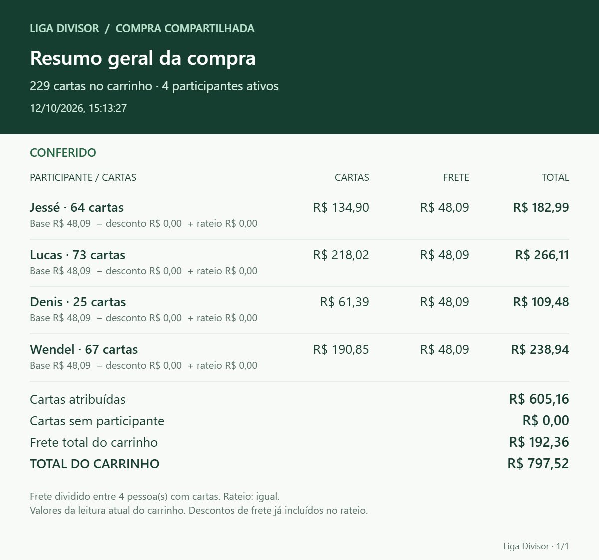
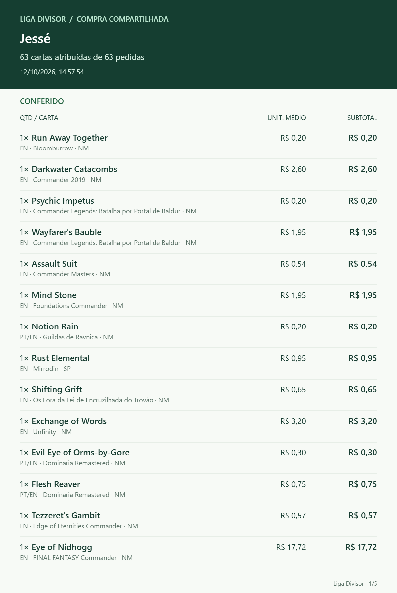

01
Divisão por participante
Crie uma lista para cada pessoa e visualize o valor das cartas atribuídas a cada participante.
Organize listas de cartas por participante, confira valores, distribua o frete e prepare resumos para compartilhar — em uma extensão de navegador independente.
Projeto de código aberto · Chrome e navegadores compatíveis com extensões Manifest V3

A extensão ajuda a manter as listas e os cálculos em um só lugar. Confira os valores no site antes de concluir qualquer compra.
Crie uma lista para cada pessoa e visualize o valor das cartas atribuídas a cada participante.
Distribua igualmente, proporcionalmente ao valor das cartas ou pela quantidade de cartas.
Gere imagens do resumo geral ou por participante para facilitar a conferência no grupo.
Exporte XLSX, salve divisões no histórico e faça backup das listas para não depender de anotações soltas.
Transfira a referência do carrinho entre dispositivos usando o recurso dedicado. O arquivo exportado deve ser mantido privado.
Procure links de cartas em lojas vinculadas à LigaMagic que sejam compatíveis. A função é experimental e exige abrir uma página de produto antes da consulta.
Exemplos de relatórios gerados pelo Divisor de Listas para conferir as cartas, os valores e o frete da compra compartilhada.
Veja o custo por participante e o total do carrinho em uma única visualização.

Confira a lista atribuída a cada pessoa, incluindo edição e valores unitários.
Até que exista uma publicação na loja oficial de extensões, a instalação é feita pelo modo de desenvolvedor a partir do código do repositório.
Abra o repositório no GitHub e use Code → Download ZIP, ou baixe o ZIP da versão na seção Releases.
Descompacte o ZIP em uma pasta que você não pretende apagar ou mover depois.
No Chrome, digite chrome://extensions. No Edge, digite edge://extensions.
Ligue o controle Modo do desenvolvedor na página de extensões.
Clique em Carregar sem compactação e selecione a pasta extraída que contém o arquivo manifest.json.
Fixe o ícone se desejar. Na primeira abertura, o tutorial guiado apresenta as funções; o botão Ajuda abre o manual novamente.
Funciona somente em lojas vinculadas à LigaMagic que sejam compatíveis. Abra a loja, entre na página de qualquer carta e então use a seção Beta da extensão. Cole a lista, inicie a busca e abra os links encontrados. Confirme manualmente edição, idioma, condição, estoque e preço. A extensão não adiciona itens ao carrinho. Se houver erro 403 ou desafio de segurança, interrompa a busca e respeite o bloqueio.
Consulte o código-fonte, acompanhe as versões e veja como contribuir. Baixe a extensão diretamente nesta página ou consulte o repositório quando ele estiver publicado no GitHub.
Não. É um projeto independente, desenvolvido por Jessé Oliveira das Chagas. LigaMagic e nomes relacionados pertencem aos seus respectivos titulares.
Não. A busca em lojas mostra links para produtos identificados. Você deve conferir os detalhes e realizar qualquer compra manualmente no site da loja.
O recurso está em beta e depende de a loja ser vinculada à LigaMagic e de sua implementação ser compatível. É necessário abrir primeiro a página de qualquer carta da loja.
As listas e o histórico ficam armazenados localmente no navegador. Use a função de backup para guardar uma cópia fora do navegador.
Use a área Issues do repositório GitHub quando ela estiver publicada. Inclua passos para reproduzir o problema e evite compartilhar cookies, dados pessoais ou arquivos de carrinho.